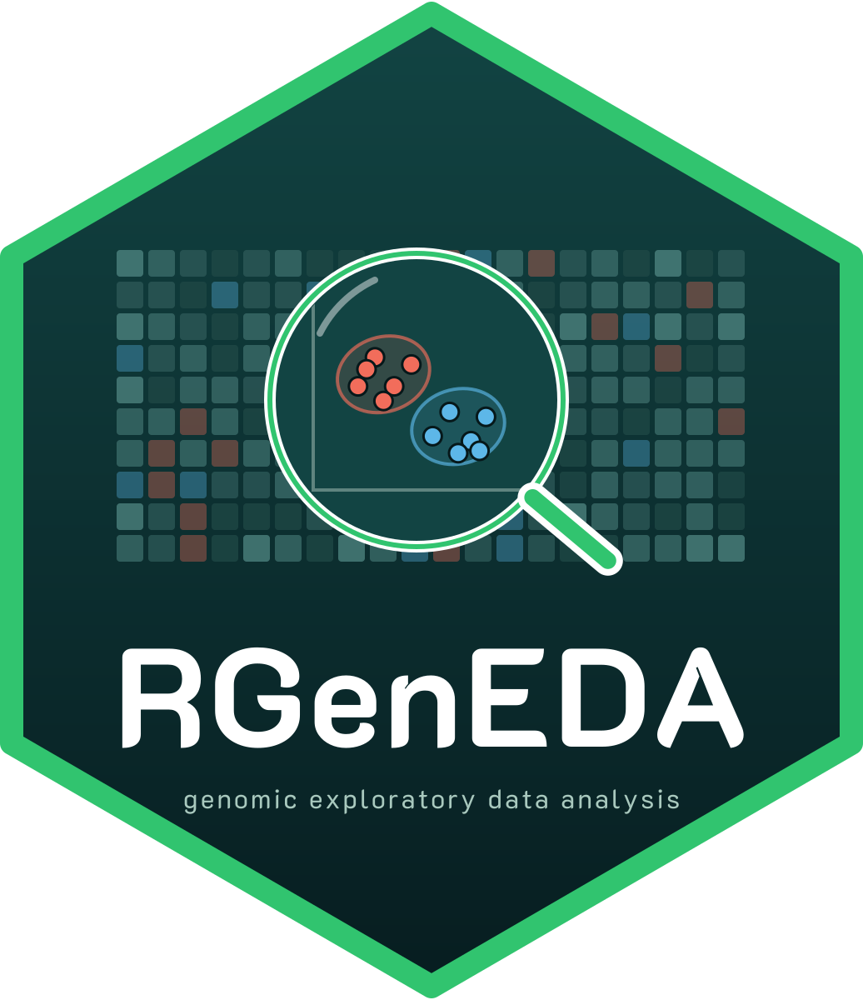

Convert a geneda object to a SummarizedExperiment
Source:R/se-interop.R
geneda-SummarizedExperiment.Rdas(object, "SummarizedExperiment") stores everything in a geneda
object in a standard SummarizedExperiment, so the results can be used
with other Bioconductor tools. as.geneda() reads the same layout back,
so converting to a SummarizedExperiment and back gives the same
geneda object.
Details
The SummarizedExperiment holds:
assaysnormalized(the normalized matrix) andcounts(the raw counts), if they have the same features asnormalized.colDatathe sample metadata.
rowDataisHVG(logical: is the gene a highly variable gene) andhvgRank(rank by variance,NAfor genes that are not HVGs).metadata(se)$RGenEDAa list with
HVGs,DimReduction(PCA scores, loadings and percent variance),DEGs(the stored DEG tables),counts(only if the counts have different features fromnormalized) andversion(the RGenEDA version).
All main RGenEDA functions also accept a SummarizedExperiment directly.
Functions that add results (FindVariableFeatures(), RunPCA(),
SetDEGs(), FilterDEGs()) then return the input SummarizedExperiment
(including subclasses such as DESeqDataSet) with the results added in
this layout.
See also
as.geneda() for the reverse conversion.
Examples
data(Snail1KO)
counts <- as.matrix(Snail1KO$rawCounts)
counts <- counts[rowSums(counts >= 10) >= 3, ]
meta <- Snail1KO$metadata
rownames(meta) <- meta$Sample
norm <- log2(t(t(counts) / colSums(counts)) * 1e6 + 1)
obj <- GenEDA(normalized = norm, metadata = meta, counts = counts)
obj <- RunPCA(obj, nfeatures = 1000)
#> HVG slot is empty. Running FindVariableFeatures with top 1000 genes
#> Calculating principal components from top 1000 HVGs
#> Percent variance explained:
#> PC1: 88.56%
#> PC2: 5.90%
#> PC3: 2.91%
#> PC4: 1.55%
#> PC5: 1.08%
#> PC6: 0.00%
se <- as(obj, "SummarizedExperiment")
se
#> class: SummarizedExperiment
#> dim: 11247 6
#> metadata(1): RGenEDA
#> assays(2): counts normalized
#> rownames(11247): TSPAN6 DPM1 ... PRRC2B F8A1
#> rowData names(2): isHVG hvgRank
#> colnames(6): ERR1736465 ERR1736466 ... ERR1736469 ERR1736470
#> colData names(4): Sample Disease Genotype CellLine_CellType
head(SummarizedExperiment::rowData(se))
#> DataFrame with 6 rows and 2 columns
#> isHVG hvgRank
#> <logical> <integer>
#> TSPAN6 FALSE NA
#> DPM1 FALSE NA
#> SCYL3 FALSE NA
#> C1orf112 FALSE NA
#> FUCA2 FALSE NA
#> GCLC FALSE NA
names(S4Vectors::metadata(se)$RGenEDA)
#> [1] "HVGs" "DimReduction" "DEGs" "counts" "version"
# Round trip back to a geneda object
obj2 <- as.geneda(se)
identical(DimReduction(obj2), DimReduction(obj))
#> [1] TRUE